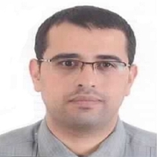

Department of Information Systems & Technology | Utah Valley University
Assistant Professor of Applied AI | Ph.D.
College of Engineering and Technology (CET), Utah Valley University, Orem, Utah
50+
Publications
$3M+
Research Funding
15+
Funded Projects
10+
Years in Academia
Advancing secure and intelligent systems through AI-driven cybersecurity, trustworthy & explainable AI, software engineering, and high-performance computing research.
Over 10 years of academic and research experience across the United States, Jordan, and Bahrain.
Dr. Anas M. R. AlSobeh is an Assistant Professor of Applied AI in the Department of Information Systems & Technology (IS&T) at Utah Valley University (UVU) and formerly served as an Assistant Professor and Program Coordinator of Information Technology & Cybersecurity at Southern Illinois University Carbondale (R1).
His research spans AI-driven cybersecurity, trustworthy and explainable AI, software engineering, cloud computing, and data science, with applications in malware and adversarial robustness, media forensics, and public-interest systems. He is the Principal Investigator on a USDA-funded project (2024–2026) focused on rapid Salmonella detection in onions using microscopic imaging and AI.
He has published 50+ peer-reviewed papers in leading venues (Q1/Q2) and received the IACIS 2024 Best Paper Award for work on deepfake detection. Beyond academia, he has contributed to international initiatives funded by EU Horizon 2020, Erasmus+, GIZ, DAAD, and Nuffic.
Utah State University, Logan, Utah, USA
Dissertation: Improving Reuse of Distributed Transaction Software with Transaction-Aware Aspects
GPA: 3.94 (95.5 – Excellent) | Mentor: Dr. Stephen Clyde
Yarmouk University, Irbid, Jordan
GPA: 88.2 (Excellent)
Yarmouk University, Irbid, Jordan
GPA: 86.2 (Excellent)
Utah Valley University (UVU), Orem, Utah, USA
Dept. of Information Systems & Technology, College of Engineering and Technology
Southern Illinois University Carbondale (R1), Illinois, USA
School of Computing, IT & Cybersecurity
ICMPD (International Centre for Migration Policy Development)
Yarmouk University, Irbid, Jordan
Information Systems Department
Yarmouk University, Irbid, Jordan
ICMPD — MIDAM Project (Danish Ministry of Foreign Affairs)
IEEE Senior Member (2023–present)
ACM SIGHPC Member (2025–2026)
Women in Cybersecurity – WiCyS (2024–present)
ACCESS Campus Champion (2025–present)
NVIDIA: Transformer-Based NLP Applications
AWS Cloud Practitioner Certificate
MIT Data Science & Machine Learning
SecureAI – Loyola University Chicago
Human Subject Research (CITI Program)
Interdisciplinary research at the intersection of cybersecurity, AI, software engineering, and scalable computing.
Malware detection, adversarial robustness, and deepfake analysis for resilient digital systems.
Explainable AI frameworks, counterfactual reasoning, and federated learning for transparent decisions.
Aspect-oriented programming, model checking, scalable architecture, and transaction-aware design.
HPC-enabled AI/ML pipelines for microscopy, forensics, and large-scale scientific computation.
Secure cloud-native systems, IoT, blockchain frameworks, and distributed reliability.
Applied analytics for policy, healthcare, migration systems, NLP, and decision support.
Deepfake detection, microscopic image analysis, aerial change detection, and image immunization.
E-health frameworks, mental health analytics, refugee education, and food safety monitoring.
50+
Publications
$3M+
Research Funding
15+
Funded Projects
Q1/Q2
Journal Quality
50+ peer-reviewed papers in leading Q1/Q2 venues including IEEE Access, Springer, Wiley, and ACM.
O Almousa, Y Tashtoush, A AlSobeh, P Zahariev, O Darwish
Big Data and Cognitive Computing 10(2), 49, Scopus Q1
A AlSobeh, A Shatnawi, A Magableh
Information 16(12), 1048, Scopus Q2
O Darwish, S Al-Eidi, A Al-Shorman, M Maabreh, A Alsobeh, Y Tashtoush, P Zahariev
CMC-Computers, Materials & Continua, Q1
N Terawi, HI Ashqar, O Darwish, A Alsobeh, P Zahariev, Y Tashtoush
Computers 14(7), 282, Scopus Q1
EM Al-Shawakfa, AMR Alsobeh, S Omari, A Shatnawi
Information 16(7), 522, Scopus Q2
AMR AlSobeh, K Gaber, MM Hammad, M Nuser, A Shatnawi
Cluster Computing, ISI Q1
S AlShattnawi, A Shatnawi, AMR AlSobeh, AA Magableh
Applied Sciences 14(6), 2254, ISI Q1
A Radwan, M Amarneh, H Alawneh, HI Ashqar, A AlSobeh, A Magableh
International Journal of Web Services Research (IJWSR), ISI Q1
AMR AlSobeh, AA Magableh
IEEE Access 11, 115062-115075
AMR Alsobeh, AAAR Magableh, EM AlSukhni
International Journal of Web Services Research 15(1), 71-88, Thomson Reuters-ISI
A AlSobeh, A AbuGhazaleh, N Dhahir, M Rababa
ICPP Companion '25, San Diego, CA
A AlSobeh, Z Gwarzo, A Shatnawi
Cyber-AI 2025
A AlSobeh, A Franklin, B Woodward
64th IACIS Annual Conference, Atlantic Beach, Florida
A AlSobeh, B Woodward
SIGITE '23, Marietta, GA, ACM
Showing selected highlights. Download full CV for the complete list of 50+ publications.
Over $3 million in research funding from USDA, EU Horizon 2020, DAAD, GIZ, Nuffic, and Erasmus+.
$3M+
Total Funding
15+
Projects Led
8+
Years Active
USDA-NIFA, Grant No. 2024-70001-43667
European Union, Horizon 2020 (H-2020)
GIZ (Deutsche Gesellschaft für Internationale Zusammenarbeit)
Yarmouk University
European Union, HOPES-MADAD (€53,375)
European Union, HOPES-MADAD (€39,250)
DAAD
DAAD
Nuffic (Orange Knowledge Programme)
EU Erasmus+ Programme
Student-centered teaching, curriculum development, and mentoring the next generation of computing professionals.
CIS 101: Computer Skills
IT 102: Intro to Computing Applications
CIS 214: Visual Programming (C#)
CIS 227: Human Computer Interaction
ITEC 280: Discrete Math for IT
CIS 260: Database Management Systems
CIS 311: Internet Applications
ITEC 312: Programming II – Python
CIS 341: Website Design
CIS 382: Cloud Computing
ITEC 409: Java Programming
CIS 411: Client/Server Programming
ITEC 410: Web Security
ITEC 419: Occupational Internship
CIS 499: Graduation Project (BSc)
INFO 1200/2200: Computer Programming I & II
CIS 642: Software Design and Modelling
CIS 683: Web Technology
CIS 699: Graduation Project (MSc)
IT 6740: Advanced Network Defense and Countermeasures
PhD Computer Science | Supervisor
Rapid Detection of Objects Using Artificial Intelligence
MS CIS | Co-Supervisor
Context-Aware Android Malware Detection Using Machine Learning
MS CIS | Co-Supervisor
Social Media Text Radicalization Detection Based on Deep Learning (Arabic)
MS, Yarmouk University | Main Advisor
Secure EHR Framework Based on Microservices and Blockchain
MS, Yarmouk University | Main Advisor
Runtime Monitoring for Aspect-Oriented Programs Using Model Checking
MS, Yarmouk University | Main Advisor
Hybrid Reasoning Framework for Cross-Cutting Concerns Using AOP
Recognition for research excellence, professional development, and extensive academic community service.
National Science Foundation – PEARC25
SIU Vice Chancellor for Research
NVIDIA Certification
Deepfake Video Detection and Emotional Insights
MIT IDSS | AWS Cloud Practitioner
IEEE Access (15+) • Electronics (20+) • Future Internet (11+) • Computers (12+) • Applied Sciences • IJWSR (7+) • Environmental Modelling & Software • Sensors • Mathematics • Sustainability • OJCMT • IET Computers
SIGITE (ACM) • AINA • IACIS • COMPSAC (IEEE) • WiCyS • ICMLSC • CMVIT • CCEAI • AAIEE • ICSED • ACAI • ICOIACT
Open to discussing research collaborations, academic opportunities, and innovative projects.
+1 (618) 713 7451
Mobile / WhatsApp
Dept. of IS&T, CET
Utah Valley University
Orem, Utah, USA
Zoom/Teams: anas.alsobeh@uvu.edu
Google Meet: anas.alsobeh@gmail.com
Office Hours: Available by appointment. Please email to schedule a meeting.